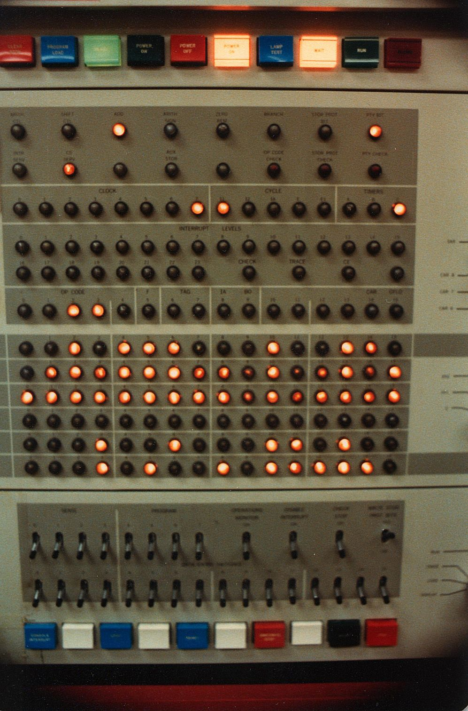

ACHTUNG!

ALLES TURISTEN UND NONTEKNISCHEN LOOKENPEEPERS!
DAS KOMPUTERMASCHINE IST NICHT FEUR DER GEFINGERPOKEN UND MITTENGRABEN! ODERWISE IST EASY TO SCHNAPPEN DER SPRINGENWERK, BLOWENFUSEN UND POPPENCORKEN MIT SPITZENSPARKEN.
IST NICHT FEUR GEWERKEN BEI DUMMKOPFEN. DER RUBBERNECKEN SIGHTSEEREN KEEPEN DAS COTTONPICKEN HAUNDER IN DAS POCKETS MUSS.
ZO RELAXEN UND WATSCHEN DER BLINKENLICHTEN.
© Michael Kafarowski 2016  Built from the ground up with no external libraries, just pure CSS and HTML!
Built from the ground up with no external libraries, just pure CSS and HTML!